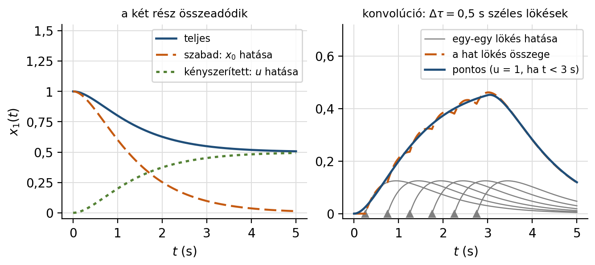
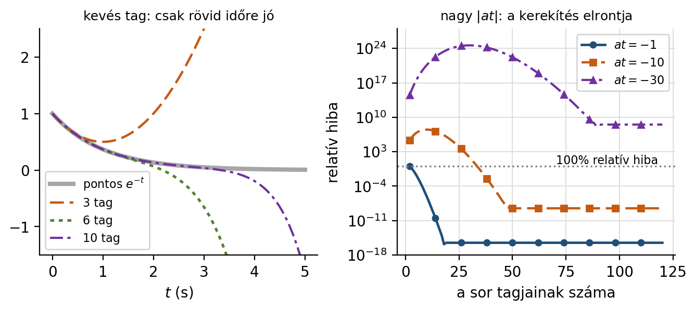

Az állapottér-modell és a realizációk
alfejezetben felírtuk, hogy
.
Ez megmondja, milyen gyorsan és merre változik az állapot
most. A szabályozónak azonban arra is válaszolnia kell:
hol lesz az állapot egy tizedmásodperc múlva? Kapcsold rá a DC-motorra
12 V-ot, miközben még forog az előző parancs hatására. A szögsebesség és
az áram időfüggvénye egyszerre függ a kezdeti állapottól és a
bemenettől. Az átviteli függvény csak a nulla kezdeti állapotról
indított választ adja meg.
Olyan képletet keresünk, amely egyetlen sorban megmondja
-t
tetszőleges
és
esetén. Erre a képletre épül később a diszkretizálás, az irányíthatóság
vizsgálata és minden pontos szimuláció.
16.2.2 Szemlélet: pályák a
fázissíkon
Autonóm
()
másodrendű rendszernél az állapot egy pont a síkon, a
fázissíkon (phase plane), az
és
koordinátákkal. Az
minden pontban megadja a sebességvektort: ez egy
irányvektor-mező. Egy megoldás
(állapotpálya, trajectory) olyan görbe, amely mindenhol
a mező irányát követi.
Statikus változat (mint a PDF-ben)
Három tipikus kép: stabil csomópont, stabil spirál és
nyeregpont a fázissíkon
Figyeld a szaggatott egyeneseket: ezek az
sajátirányai (eigendirections). Ha a kezdőpont rajtuk
van, a pálya végig egyenes marad, és az állapot egyszerűen
szerint zsugorodik vagy nő:
miatt a sebesség a pozícióval párhuzamos.
Mielőtt tovább olvasol, tippeld meg: a nyeregpontos rendszerben
(
és
)
hová tart egy pálya, amely majdnem pontosan a stabil sajátirányról
indul? Először az origó felé, vagy rögtön kifelé? Az interaktív ábrán a
húzható kezdőponttal kipróbálhatod.
A sor tagjaiban az
helyére négyzetes mátrix is írható, mert a hatványai értelmesek.
Definíció. Az
-es
mátrix mátrixexponenciálisa (matrix exponential)
A sor minden véges
-ra
és
-re
konvergál, és
-es
mátrix. Az
neve átmenetmátrix is (state transition matrix), jele
.
Tétel. A mátrixexponenciális tulajdonságai:
;
;
,
ezért
:
az átmenet mindig visszafordítható;
csak akkor biztos, ha
.
A 3. tulajdonság szemléletesen: ha az állapotot előbb
,
majd további
ideig engeded futni, ugyanoda jutsz, mintha egyszerre
ideig futna. Ez azért igaz, mert a köztes állapot mindent megőriz, ami a
jövőhöz kell.
A 2. állítás tagonkénti deriválással látszik: a
-adik
tag deriváltja
,
azaz a sor „eggyel eltolva”,
-val
szorozva. Ebből a homogén egyenlet megoldása:
,
mert
és
.
A
-edik
oszlopa tehát az a pálya, amely a
-edik
egységvektorból indul.
16.2.4 A teljes megoldás: szabad és
kényszerített válasz
Bemenettel a skalár esetben megismert integráló
tényezős módszer működik. Szorozzuk meg az egyenletet balról
-vel:
Végül balról
-vel
szorzunk (3. tulajdonság).
Tétel. Az állapotegyenlet megoldása:
Az első tag a szabad válasz (free response): a
kezdeti állapot hatása bemenet nélkül. A második a kényszerített
válasz (forced response) – egy konvolúció. Ez
a felbontás a KDE megoldása, kezdeti- és
végérték-tétel alfejezetben látott szétválasztás mátrixos
alakja.
A konvolúció szavakkal: a
pillanatban egy
hosszú „lökés”
-val
megnöveli az állapotot, és ez a növekmény a hátralévő
idő alatt a saját dinamika szerint,
-val
fejlődik tovább. Az állapot a
pillanatban az összes korábbi lökés nyomának összege.

Bal oldalon a szabad és a kényszerített rész összege, jobb
oldalon hat rövid lökés hatásának összege
A jobb oldali panelen a hat fél másodperces lökés összege már jól
követi a pontos választ; ha
-t
csökkented, a fűrészfog eltűnik, és az összeg integrállá válik.
16.2.4.1 Ugrásválasz zárt
alakban
Ha
állandó és
invertálható, az integrál kiszámítható:
.
(Ellenőrzés: a jobb oldal
-nál
nulla, deriváltja
.)
Így nulla kezdeti állapotból
Stabil rendszernél
,
tehát az állapot a
egyensúlyhoz tart, a kimenet pedig a statikus erősítés szorozva a
bemenettel.
16.2.5 Az
kiszámítása
16.2.5.1 Diagonalizálással
Ha
-nak
független sajátvektora van, ezeket oszlopokként a
mátrixba rendezve
,
ahol
.
Ekkor
(a belső
párok kiesnek), és a sorba helyettesítve
Az
minden eleme tehát
tagok lineáris kombinációja: a pólus dönt a mátrixos
világban is. Komplex sajátértékpárból lecsengő (vagy növekvő) szinusz
lesz. Ha nincs elég sajátvektor (Jordan-blokk),
alakú tagok is megjelennek; lásd a 2. feladatot és a Sajátmódusok, koordináta-transzformáció és
stabilitás alfejezetet.
16.2.5.2 A kezdőállapot felbontása:
a nyereg rejtvénye
Írd fel a kezdőállapotot a sajátvektorok kombinációjaként:
,
azaz
.
Az előző képletből
A pálya tehát két, egymástól független mozgás összege, mindegyik a
saját egyenese mentén. Ezzel megválaszolhatjuk a Szemlélet rész
kérdését. A nyeregpontos
sajátvektorai
()
és
().
Ha
,
akkor eleinte a nagy
tag zsugorodik, és a pálya az origó felé indul. A kicsi
tag közben
szerint nő; a két tag nagysága akkor egyezik meg, amikor
,
vagyis
s körül. Utána az instabil irány győz. Egy instabil sajátérték elég,
hogy szinte minden kezdőpontból elszökjön az állapot.
16.2.5.3
Laplace-transzformációval
Az
egyenlet Laplace-transzformáltja
,
vagyis
.
Ezt a
megoldással összevetve:
A kézi módszerek legfeljebb néhány dimenzióig kényelmesek, és a
diagonalizálás rosszul kondicionált, ha a sajátvektorok majdnem
párhuzamosak. A gyakorlatban a scipy.linalg.expm függvényt
hívd: skálázás-és-négyzetre emelés elvű Padé-közelítést használ, vagyis
kihasználja, hogy
,
és a kis normájú mátrix exponenciálisát racionális törttel közelíti.
16.2.6 Numerikus csapda: a csonkolt
hatványsor
A definíció kézenfekvőnek tűnő programja – adjunk össze néhány tucat
tagot – félrevezető. Két külön hiba jelentkezik:
Kevés tag. A
növekedésével egyre több tag kell: a csonkolt sor polinom, amely végül
elszáll, miközben
nullához tart.
Kioltás. Nagy
esetén a sor tagjai óriásiak, váltakozó előjellel, az eredmény pedig
parányi. A lebegőpontos számok kb. 16 jegyet tárolnak, ezért a nagy
tagok különbségében a kerekítési hiba marad meg.
esetén 30 tag
-t
ad a pontos
helyett, és több tag sem segít.

A csonkolt sor rövid ideig jó; nagy at értéknél a
lebegőpontos kioltás használhatatlanná teszi
16.2.7 Előretekintés: a pontos
diszkretizálás
A digitális szabályozó
időközönként ad új beavatkozó jelet, és közben tartja (nulladrendű
tartó, ZOH). Alkalmazd a teljes megoldást egyetlen periódusra,
kezdeti állapottal és állandó
bemenettel:
Ez pontos a mintavételi pillanatokban, nem
közelítés. A részleteket a Diszkretizálási
módszerek alfejezet tárgyalja; az
(Euler) csak kis
-re
jó, mert a sor első két tagja.
16.2.8 Kézi számpélda: egy 2×2-es
átmenetmátrix
Legyen
,
.
1. Sajátértékek.
,
tehát
,
.
2. Sajátvektorok.
első sora
,
tehát
:
,
.
3. Szorzás.
:
Ellenőrzés:
-nál
egységmátrix.
4. Ugyanez Laplace-szal. A rezolvens
Például a bal felső elem:
,
inverze
.
Ugyanazt kaptuk.
5. Szabad válasz
-ból:
az első oszlop,
.
6. Kényszerített válasz
-re:
a második oszlop integrálja,
A state_response mintaközönként ugyanazt a pontos lépést
végzi, mint az előző szakasz
,
képlete, ezért állandó bemenetre nincs lépésközfüggő hibája. A rezolvens
számlálója
.
# hatványsor kontra expmfor t_veg in (1.0, 5.0):for N in (5, 10, 20): hiba = np.abs(ss.expm_series(A, t_veg, N) - expm(A * t_veg)).max()print(f"t = {t_veg:g} s, {N:2d} tag: legnagyobb elemhiba {hiba:.1e}")sor = ss.expm_series([[-30]], 1.0, 30)[0, 0]print(f"a = -30, 30 tag: {sor:.2e}, pontos: {np.exp(-30):.2e}")
t = 1 s, 5 tag: legnagyobb elemhiba 3.9e-01
t = 1 s, 10 tag: legnagyobb elemhiba 4.8e-04
t = 1 s, 20 tag: legnagyobb elemhiba 7.9e-13
t = 5 s, 5 tag: legnagyobb elemhiba 5.7e+02
t = 5 s, 10 tag: legnagyobb elemhiba 2.8e+03
t = 5 s, 20 tag: legnagyobb elemhiba 5.5e+01
a = -30, 30 tag: -3.91e+11, pontos: 9.36e-14
# DC-motor: 12 V álló helyzetből, és a pontos diszkrét lépés Ts = 0,5 s-malmotor = ss.motor_ss("speed")x_inf =-np.linalg.solve(motor.A, motor.B[:, 0]) *12x_05 = (expm(motor.A *0.5) - np.eye(2)) @ (-x_inf) # A^-1 (e^{At} - I) B uprint(f"x(0,5 s): omega = {x_05[0]:.3f} rad/s, i = {x_05[1]:.2f} A")print(f"végérték: omega = {x_inf[0]:.3f} rad/s, i = {x_inf[1]:.2f} A")
x(0,5 s): omega = 0.650 rad/s, i = 7.58 A
végérték: omega = 1.199 rad/s, i = 11.99 A
Fél másodperc alatt a motor a végsebesség alig több mint felét éri
el, miközben az áram már 7,6 A: egy valódi motornál ezt az áramkorlát
szempontjából ellenőrizni kell (valódi hardveren csak áramkorláttal és
vészleállítóval, felügyelet mellett kísérletezz).
Sajátirányok. A „csomópont” beállításban húzd a
kezdőpontot a narancs (szaggatott) vagy a zöld (pontozott) egyenesre. A
vastag pálya egyenes marad, és a jobb oldali görbék egyetlen
exponenciálist követnek. Máshonnan indulva a pálya a lassabb
()
irányhoz simulva ér az origóba: a gyorsabb módus előbb elfogy.
Nyereg. Nyomd meg a „nyereg” gombot, és tedd a
kezdőpontot a
egyenes közelébe, például
környékére. A pálya először az origó felé tart, majd a
irány mentén elszökik. Egy pontosan a stabil irányon fekvő pont maradna
csak korlátos, ezért a rendszer instabil.
Spirálból centrum. A „stabil spirál” esetben növeld
-t
-től
-ig,
majd
-ig.
Az állapotsorban a sajátértékek valós része eléri a nullát, a spirál
zárt görbévé, majd kifelé tekeredővé válik.
Jordan. A „Jordan” beállításban a két sajátérték
,
de csak egy sajátirány van. Változtasd
-t
-ra:
minden irány sajátirány lesz, a pályák sugarak.
16.2.11 Tipikus hibák
Elemenkénti exponenciális.Tünet:np.exp(A * t), és a „megoldás” nulla időben sem
egységmátrix. Ok: az
nem az elemek exponenciálisa;
-nál
np.exp csupa egyest ad. Javítás:scipy.linalg.expm.
feltétel nélkül.Tünet: a két részre bontott modell
eredménye eltér. Ok:
és
nem felcserélhető. Javítás: csak
esetén bontsd szét (3. önellenőrző kérdés).
Hiányzó
vagy rossz argumentum a konvolúcióban.Tünet:
szerepel
helyett, időben változó bemenetnél rossz eredmény. Ok: nem az
eltelt időt vesszük. Javítás: a
-kor
beadott lökés
ideig fejlődik.
Átviteli függvény nem nulla kezdeti állapottal.Tünet: a mért válasz nem egyezik
inverzével. Ok: a szabad válasz hiányzik. Javítás: add
hozzá az
tagot.
Saját hatványsor a kódban.Tünet: merev
rendszernél vagy hosszú időre óriási számok. Ok: csonkolás és
kioltás. Javítás:expm, vagy a
state_response / lsim.
16.2.12 Önellenőrzés
Mit jelent a
második oszlopa?
Miért mindig invertálható
,
akkor is, ha
nem az?
Igaz-e
tetszőleges
,
mátrixra?
Mit ad a
képlet instabil, de invertálható
esetén?
Miért nő nagyságrendekkel a csonkolt hatványsor hibája nagy negatív
-re?
16.2.13 Feladatok
(A)
,
.
Írd fel
-t
és
-t.
Mikor lesz a két komponens egyenlő?
(A) Számítsd ki
-t
esetén az
felbontással (itt
).
(B) Az
rendszerre határozd meg
-t
Laplace-szal. Mekkora a determinánsa, és milyen alakúak a pályák?
(B) A kettős integrátor
,
.
Vezesd le
-t,
a
-hez
tartozó
,
mátrixokat és az
-ból
-re
adott választ.
(C, programozós) Számítsd ki a konvolúciót
trapézszabállyal
,
a kézi példából,
,
s esetén,
;
;
s lépéssel, és hasonlítsd egy pontos ODE-megoldáshoz. Hányadrendű a
hiba?
(C) Mutasd meg a 4. tulajdonság szükségességét:
legyen
és
.
Számold ki
-et
és
-et.
16.2.14 Rövid összefoglaló
A mátrixexponenciális
az autonóm rendszer átmenetmátrixa; deriváltja
,
inverze
.
A teljes megoldás
:
szabad és kényszerített válasz, utóbbi a múltbeli lökések lecsengő
nyomainak összege. Állandó bemenetre, invertálható
-val
.
Számítás: sajátértékekkel,
-ként
vagy expm-mel; a csonkolt hatványsor veszélyes.
Mintavételes rendszerben
.
A pályák a fázissíkon a sajátirányok köré rendeződnek.
16.2.15 Megoldások
16.2.15.1 Válaszok az önellenőrző
kérdésekre
Azt a pályát, amely a
egységvektorból indul bemenet nélkül.
Mert
:
az
és
felcserélhető.
Nem, csak ha
(6. feladat).
Az egyensúlyi pontot, amely azonban instabil: a pálya általában nem
tart hozzá.
A tagok óriásiak és váltakozó előjelűek; a kerekítési hibájuk sokkal
nagyobb a parányi eredménynél.
16.2.15.2 A feladatok
megoldásai
,
.
,
ha
,
azaz
s.
és
felcserélhető, ezért
,
mivel
:
.
Megjelent a
tag.
,
tehát
.
Determinánsa
;
a pályák ellipszisek
(
állandó).
,
így
.
,
.
-re
.
nem invertálható, ezért az
-es
képlet nem használható.
Megoldás:
from scipy.integrate import solve_ivpT =2.0ref = solve_ivp(lambda s, x: A @ x + B[:, 0] * np.sin(s), (0, T), [0, 0], rtol=1e-12, atol=1e-13).y[:, -1]for h in (0.2, 0.1, 0.05): tau = np.linspace(0, T, int(round(T / h)) +1) f = np.array([expm(A * (T - s)) @ B[:, 0] * np.sin(s) for s in tau]) integral = h * (f.sum(axis=0) -0.5* (f[0] + f[-1]))print(f"h = {h:.2f}: hiba = {np.abs(integral - ref).max():.2e}")
h = 0.20: hiba = 8.04e-03
h = 0.10: hiba = 2.01e-03
h = 0.05: hiba = 5.02e-04
A lépés felezésére a hiba negyedére csökken: a trapézszabály
másodrendű. 6. A szorzat tényezői és eredménye:
Ugyanakkor
,
amelynek négyzete
,
ezért a sor páros és páratlan tagjai szétválnak: